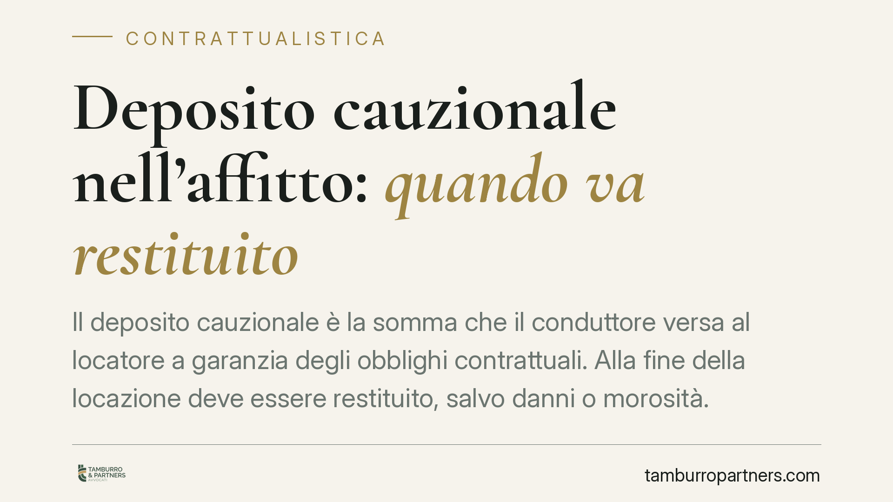

Deposito cauzionale nell'affitto: quando va restituito
Il deposito cauzionale è la somma che il conduttore versa al locatore a garanzia degli obblighi contrattuali. Alla fine della locazione deve essere restituito, salvo danni o morosità. Molti conflitti nascono proprio qui: importi trattenuti senza giustificazione, ritardi, mancata corresponsione degli interessi. Vediamo cosa dice la legge e come muoversi.

Inquadramento normativo
La disciplina del deposito cauzionale è contenuta nell'art. 11 della Legge 27 luglio 1978, n. 392 (la cosiddetta "legge sull'equo canone", tuttora vigente per questa parte). La norma fissa un limite preciso: il deposito non può superare le tre mensilità del canone.
La stessa disposizione stabilisce che la somma versata è produttiva di interessi legali, che il locatore deve corrispondere al conduttore alla fine di ogni anno. Si tratta di un obbligo automatico: non richiede una richiesta espressa e non può essere escluso da clausole contrattuali difformi, essendo la norma inderogabile a favore del conduttore.
La funzione del deposito è di garanzia. Serve a coprire eventuali inadempimenti del conduttore: canoni non pagati, spese accessorie insolute, danni all'immobile eccedenti il normale deterioramento d'uso. Non è invece un anticipo sul canone né una somma di cui il locatore possa disporre liberamente.
Quando scatta la restituzione
L'obbligo di restituzione sorge al termine del rapporto locatizio, ossia con la riconsegna dell'immobile. La legge non indica un termine fisso, ma la giurisprudenza è consolidata: il locatore deve restituire il deposito una volta accertata l'assenza di danni o pendenze.
La Cassazione ha chiarito un punto rilevante per chi affitta: l'obbligo di restituzione del deposito non è subordinato a una richiesta del conduttore. Alla riconsegna dei locali, spetta al locatore attivarsi. Se ritiene di trattenere in tutto o in parte la somma, deve però indicare le ragioni concrete: quali danni, quali importi insoluti.
È importante distinguere il normale deterioramento d'uso dai danni veri e propri. Segni di usura, piccoli scolorimenti delle pareti, usura degli infissi legata al tempo non giustificano trattenute. Sono a carico del conduttore solo i danni che eccedono l'uso ordinario e diligente dell'immobile.
Implicazioni pratiche
Per il conduttore che ha lasciato l'immobile in ordine e pagato regolarmente i canoni, il deposito va restituito per intero, maggiorato degli interessi legali maturati. Se il locatore tace o trattiene senza motivo, il conduttore può agire per il recupero.
Per il locatore, trattenere il deposito richiede prudenza. Una trattenuta arbitraria espone al rischio di soccombere in giudizio, con condanna alle spese. Chi vuole trattenere somme deve poter documentare danni o insoluti: un verbale di riconsegna dettagliato, fotografie, preventivi di ripristino sono strumenti decisivi.
Il punto critico è quasi sempre probatorio. In assenza di uno stato dei luoghi iniziale e finale, diventa difficile per il locatore dimostrare che i danni siano imputabili al conduttore e non preesistenti.
Cosa fare in concreto
- Redigete un verbale di consegna e di riconsegna dell'immobile, con fotografie datate. È la prova principale in caso di contestazione sui danni.
- Conservate la documentazione dei pagamenti e ogni comunicazione scritta relativa al deposito e agli interessi.
- Se siete conduttori e il deposito non viene restituito, inviate una diffida scritta (raccomandata o PEC) intimando la restituzione entro un termine e riservandovi le azioni legali.
- Se siete locatori e intendete trattenere somme, quantificate per iscritto le voci contestate, allegando preventivi o fatture di ripristino: una trattenuta motivata e documentata regge in giudizio, una generica no.
- Prima di avviare una causa, valutate la mediazione o una definizione stragiudiziale: spesso il valore del deposito rende antieconomico il contenzioso.
Consigliamo, in ogni caso, di far verificare il contratto e le clausole sul deposito prima della firma: molte controversie si prevengono a monte, definendo con chiarezza importo, interessi e condizioni di restituzione.
Disclaimer
Contributo informativo a cura di Tamburro & Partners - Avv. Giuseppe Tamburro. Non costituisce parere legale.
Ogni contratto ha il suo equilibrio.
Se vuoi una revisione delle clausole o una redazione su misura, scrivi allo studio. Ti rispondiamo entro un giorno lavorativo.